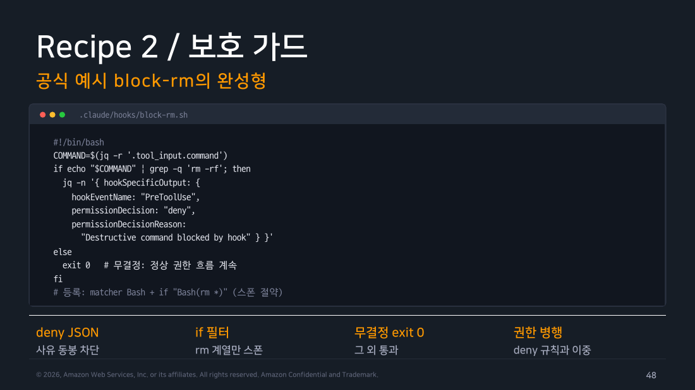

Part 4 — Hooks 실전¶
한 줄 요약¶
처음에는 command로 PreToolUse 보호 가드 하나와 PostToolUse 후처리 하나만 만듭니다. 이 두 훅을 검증한 뒤 중앙화·외부 연동·의미 판정이 필요할 때 http·mcp_tool·prompt·agent로 넓혀갑니다.
왜 알아야 하나¶
Part 3에서 훅의 뼈대인 이벤트·매처·결정 출력을 살펴봤습니다. 이 파트에서는 실제로 쓸 만한 훅을 만들어봅니다.
1. 선택 심화 최소 실습 — 전에는 막고, 후에는 정리한다¶
command 핸들러만으로도 첫 구성을 완성할 수 있습니다. 먼저 두 가지를 연결합니다.
- 후처리 1개(포맷터 또는 로그):
PostToolUse에Edit|Write매처를 걸어 파일 수정 직후prettier/ruff를 실행하거나 기록을 남깁니다. 성공한 수정 호출이 대상이므로 앞의 호출이 차단되면 이 Hook은 발화하지 않습니다. - 보호 가드:
PreToolUse에if: "Bash(rm *)"를 설정합니다. 실제로rm -rf패턴이 보이면permissionDecision: "deny"JSON을 반환하고, 그 외에는exit 0(무결정)으로 원래 권한 흐름에 판단을 넘깁니다. Part 3 Lab 2에서 직접 검증한 것과 같은 패턴입니다. 실습에서는 항상 deny하도록 단순화했지만 실전에서는 조건을 검사해 판단합니다.
알림(Notification/Stop)은 세 번째 선택지입니다. 최소 경로가 성공한 뒤 장기 실행에 필요할 때 추가합니다.

▲ 교재 슬라이드 48 — Recipe 2 / 보호 가드
안전 경계
Hook이 응답하지 않거나 HTTP Hook이 실패하면 원래 권한 흐름으로 통과할 수 있습니다. 따라서 “응답이 없으면 막는다”는 안전장치로 사용할 수 없습니다. 파일이나 명령을 반드시 차단해야 한다면 Part 2의 Permission을 먼저 두고, Hook은 추가 검사와 기록에 사용합니다. Kubernetes admission webhook 비유는 이 차이를 이미 아는 독자를 위한 심화 설명입니다.
2. HTTP 훅 — 중앙 서비스로 이벤트를 쏜다¶
팀이 공유하는 중앙 훅 서버로 이벤트를 보내려면 command 대신 HTTP 훅을 씁니다.
{ "hooks": { "PreToolUse": [
{ "matcher": "Bash",
"hooks": [{ "type": "http",
"url": "https://hooks.corp.example/pre-tool",
"headers": { "Authorization": "Bearer $HOOK_TOKEN" },
"allowedEnvVars": ["HOOK_TOKEN"] }] } ] } }
동작은 두 경우로 나뉩니다. 서버가 2xx(200번대, "성공"을 뜻하는 HTTP 상태 코드)로 응답하면서 permissionDecision: "deny"를 반환하면 차단합니다. 에러 응답이나 타임아웃을 포함한 나머지 경우에는 통과시킵니다.
이 방식을 fail-open(판단할 수 없으면 통과)이라고 합니다. 응답이 없을 때마다 차단하도록 설계하면 중앙 훅 서버가 잠시 중단된 것만으로도 모든 사용자의 작업이 멈출 수 있습니다. 이런 장애 전파를 피하려고 통과를 기본값으로 둔 것입니다. Part 2의 권한 규칙(allow/ask/deny)은 HTTP 훅과 별개로 계속 작동합니다. 따라서 HTTP 훅은 추가 방어선으로만 써야 합니다.
설정할 때는 두 항목을 더 확인합니다. 헤더에 환경변수를 보간하려면 allowedEnvVars로 명시적으로 허용해야 합니다. 조직에서는 allowedHttpHookUrls로 훅이 요청을 보낼 목적지까지 통제할 수 있습니다.
3. mcp_tool·prompt·agent — 상황별로 고르기¶
나머지 세 핸들러는 판단 방식에 따라 나누면 됩니다.
- 파일명 규칙 체크처럼 규칙이 정해진 로직 →
command(이미 봄) - 이미 연결된 MCP 서버의 도구를 그대로 쓰고 싶음 →
mcp_tool - "이 커밋 메시지가 적절한가?"처럼 의미를 판단해야 함 →
prompt - 여러 파일을 실제로 열어보고 조사해야 함 →
agent
{ "hooks": { "PostToolUse": [
{ "matcher": "Write|Edit",
"hooks": [{ "type": "mcp_tool",
"server": "security", "tool": "security_scan",
"input": { "file_path": "${tool_input.file_path}" } }] }
] } }
mcp_tool은 ${tool_input.file_path}처럼 이벤트 필드를 입력에 치환할 수 있습니다. 별도 스크립트 없이 이미 연결된 MCP 서버의 도구를 재사용한다는 점이 장점입니다. 단, 서버가 이미 연결되어 있어야 하며 이 훅이 새로운 OAuth 인증을 시작하지는 않습니다. SessionStart나 Setup처럼 MCP 연결이 끝나기 전의 이벤트에 걸면 첫 실행에서 실패할 수 있습니다.
prompt 훅은 정규식이나 권한 규칙으로 표현하기 어려운 의미 판단을 모델 호출 한 번에 맡깁니다. 기본으로 빠른 모델(예: haiku)을 쓰고 타임아웃도 30초로 짧게 설정해 지연과 비용을 제한합니다. agent 훅은 Read, Grep 같은 도구로 실제 diff를 읽고 스키마가 깨지는지까지 확인한 뒤 판정합니다. 교재에서는 "실험적" 기능으로 표시하므로 변경 가능성을 염두에 둬야 합니다.
4. 그 외 레시피 (필요할 때 참고)¶
- 반응형 환경:
FileChanged에.envrc|.env매처를 걸고async: true로direnv allow를 자동 실행하거나,CwdChanged로 디렉터리 이동 시마다 환경을 재정렬합니다. - Setup과 컨텍스트 주입:
claude --init-only로 CI 환경을 1회 준비하고UserPromptSubmit의 stdout을 컨텍스트에 주입해(git status --short등) 매 턴 최신 상태를 자동으로 알려줍니다.
5. /hooks 메뉴와 디버깅¶
/hooks는 설정된 모든 훅을 읽기 전용으로 보여줍니다. 각 훅이 어느 파일(User/Project/Local/Plugin/Session/Built-in)에서 왔는지도 확인할 수 있습니다. 훅 때문에 문제가 생긴 것 같다면 먼저 disableAllHooks를 켜서 증상이 사라지는지 확인합니다.
직접 해보기¶
보호 가드의 핵심 동작은 Part 3의 Lab 2에서 직접 실행해 검증했습니다. v2.1.239에서 PreToolUse의 JSON deny 결정은 도구 호출을 차단했습니다. 차단된 호출은 PostToolUse에 도달하지 않았고 permission_denials에 기록됐습니다. 다만 이 필드의 기록 방식은 공식 계약이 아니므로 실측 보조 신호로만 보고 실제 산출물·종료 상태·훅 로그를 함께 확인합니다. 나머지 레시피(HTTP·mcp_tool·알림·반응형 환경)는 외부 서비스(슬랙 웹훅, MCP 서버, direnv)가 필요해 이번 실습에서는 재현하지 않았습니다.
disableAllHooks를 이용한 디버깅 순서도 직접 확인했습니다. PreToolUse 훅이 로그를 남기도록 설정한 상태에서 파일을 만들면 로그 파일이 생깁니다. disableAllHooks: true를 켜고 같은 요청을 보내면 파일은 생성되지만 로그 파일은 생기지 않았습니다. 훅이 완전히 꺼진 것입니다. /hooks 메뉴는 대화형 전용 UI였습니다. 헤드리스(-p)에서는 "/hooks isn't available in this environment."라는 메시지만 반환되어, 소스 라벨(User/Project/Local/Plugin/Session/Built-in)은 대화형 세션에서만 확인할 수 있었습니다.
흔한 오해 바로잡기¶
"HTTP 훅이 응답을 못 받으면 안전하게 차단된다" — 정반대입니다. 비2xx나 타임아웃은 비차단 오류로 처리되어 작업이 계속됩니다. 중앙 훅 서비스의 가용성에 보안을 의존한다면 이 fail-open 기본값을 반드시 고려해야 합니다.
정리¶
command 외의 네 핸들러도 용도가 분명합니다. HTTP는 팀의 훅을 한곳에서 관리할 때, mcp_tool은 이미 연결된 도구를 스크립트 없이 재사용할 때 씁니다. prompt와 agent는 정규식으로 표현하기 어려운 의미 판단에 알맞습니다. 처음 적용할 만한 레시피는 포맷터·보호 가드·알림이며, 보호 가드는 Part 3의 Lab 2에서 실제 동작을 확인했습니다. 문제를 추적할 때는 /hooks로 출처를 확인하고 disableAllHooks를 켜서 훅이 원인인지 먼저 가려냅니다. 다음 파트에서는 Claude Code를 외부 시스템과 연결하는 MCP를 다룹니다.
출처¶
- Claude Code Deep Dive Workshop — Chapter 4 / Part 4: Hooks 실전 (2026.07 판, s44~53)
- 공식 문서: Automate actions with hooks